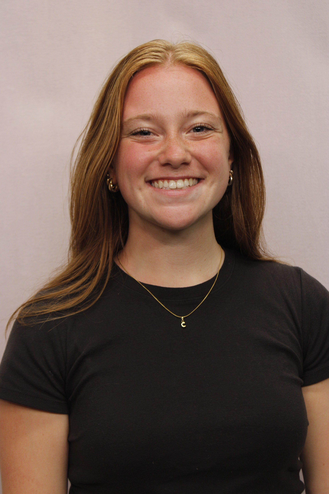

I am Cailin Kelly and I am a current student at the S.I. Newhouse School of Public Communications. I am studying broadcast and digital journalism with a sports media specification. My dream is to be a sideline reporter for baseball. I grew up outside Philly on the “main line.”
My three favorite things about Syracuse:
